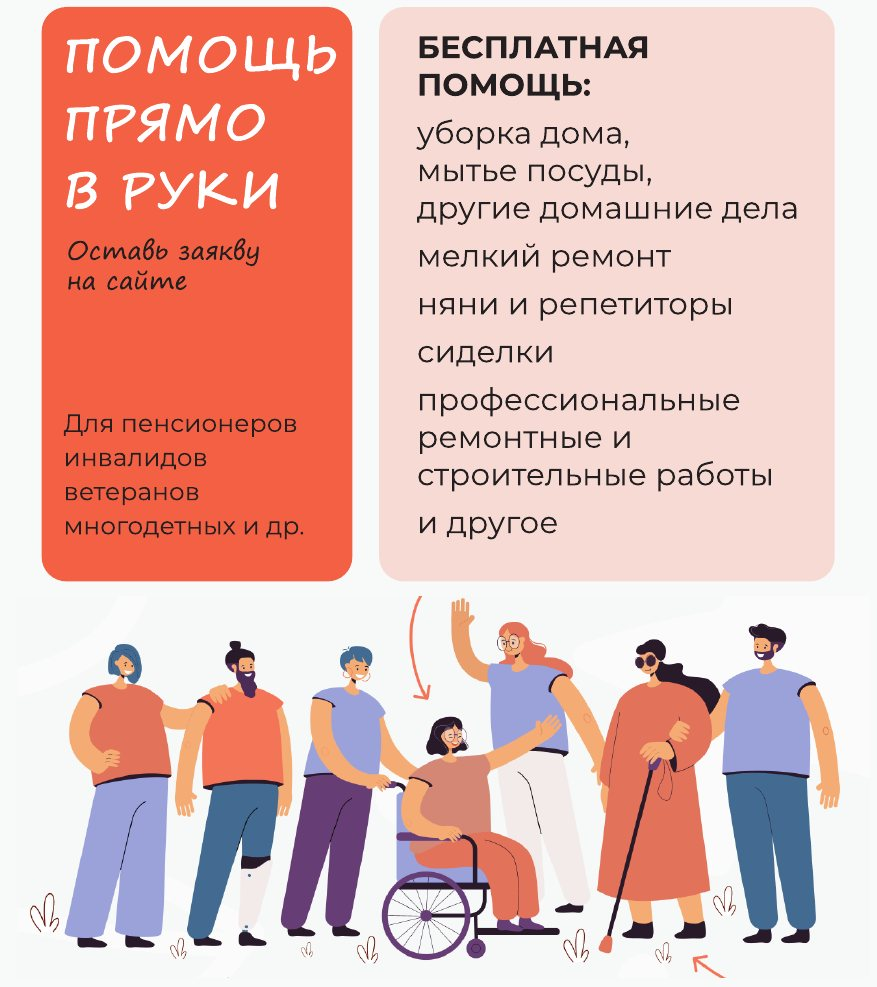
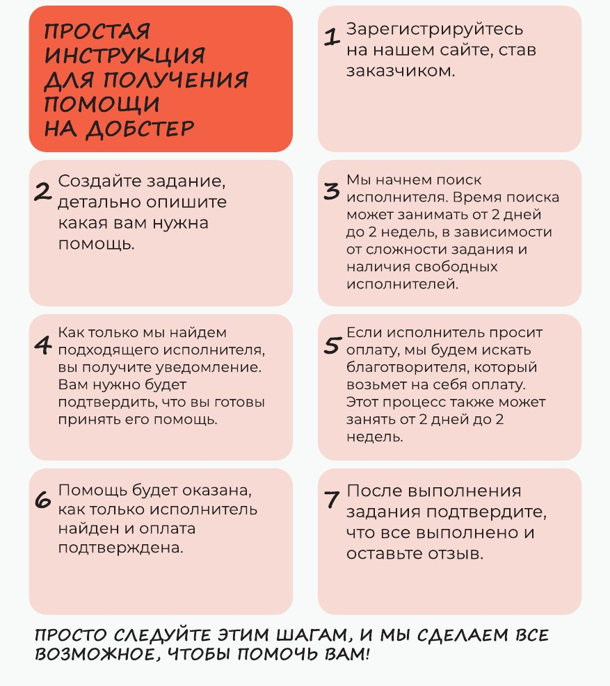

«Добстер»: платформа благотворительных услуг
Главный результатЗапущена с нуля до продакшена
- Продукт
- платформа, где пожилые люди, люди с инвалидностью, ветераны и многодетные семьи бесплатно получают помощь по дому и услуги специалистов, web + adaptive (B2C)
- Стадия
- запуск с нуля до продакшена
- Стек
- Python, React
- Сайт
- dobster.ru
Идея: «Помощь прямо в руки»
Человек, которому нужна помощь, оставляет заявку на сайте — и получает её бесплатно: уборку и домашние дела, мелкий ремонт, няню или репетитора, сиделку, профессиональные ремонтные и строительные работы.
Платформа соединяет три стороны:
- заказчика — того, кому нужна помощь;
- исполнителя — волонтёра или специалиста, который её оказывает;
- благотворителя — того, кто оплачивает работу, если исполнитель работает не бесплатно.
Как это работает
- Получатель подтверждает свой статус через Госуслуги и оставляет задание на платформе.
- Платформа оповещает помощников, они откликаются, получатель выбирает исполнителя.
- Платформа оповещает благотворителей, один из них подтверждает финансирование задания.
- Помощник выполняет задание и отправляет отчёт благотворителю.
- Благотворитель принимает работу и подтверждает оплату.
«Добстер» — некоммерческий проект: платформа не берёт комиссий, деньги благотворителя идут напрямую на задание. Потенциальная аудитория — 69 млн человек, которые в России официально относятся к социально уязвимым группам.
Путь заказчика
- Регистрация на сайте в роли заказчика.
- Создание задания с подробным описанием помощи.
- Поиск исполнителя — от 2 дней до 2 недель, в зависимости от сложности и свободных исполнителей.
- Уведомление о найденном исполнителе и подтверждение, что заказчик готов принять помощь.
- Если исполнитель просит оплату — поиск благотворителя, который возьмёт её на себя (тоже от 2 дней до 2 недель).
- Помощь оказывается, как только исполнитель найден и оплата подтверждена.
- Заказчик подтверждает выполнение и оставляет отзыв.


Партнёрская программа
Чтобы привлекать благотворителей и помощников, мы сделали программу для компаний — «Говорите о добре, дарите добро, творите добро»:
- рассказать о «Добстере» клиентам и сотрудникам;
- подарить призы и привилегии самым активным помощникам и благотворителям;
- профинансировать задачи или участвовать как волонтёры.
Взамен компания получает партнёрский блок на платформе, совместную PR-кампанию для прессы, рассылок и соцсетей и выход своих подарков на аудиторию проекта.
📎 Презентация партнёрской программы, PDF
Что я сделал
- Создал концепцию продукта и роадмап.
- Спроектировал модель с тремя ролями и путь заказчика — так, чтобы им мог пройти пожилой человек: подтверждение статуса через Госуслуги, заявка, подтверждение, отзыв.
- Придумал партнёрскую программу для компаний как канал привлечения благотворителей и помощников.
- Разработал мокапы.
- Собрал команду.
- Запустил продукт в продакшен.
Что этот кейс показывает
Полный цикл запуска продукта в социальной сфере, где пользователь — не самая цифровая аудитория, а сделку закрывают сразу три стороны: тот, кому нужна помощь, тот, кто помогает, и тот, кто платит.
Чему научился
- Когда сделку закрывают три стороны, путь каждой проектируется отдельно. Самый сложный путь — у заказчика, пожилого человека.
- Привлечение благотворителей и помощников — отдельный продукт: так появилась партнёрская программа.